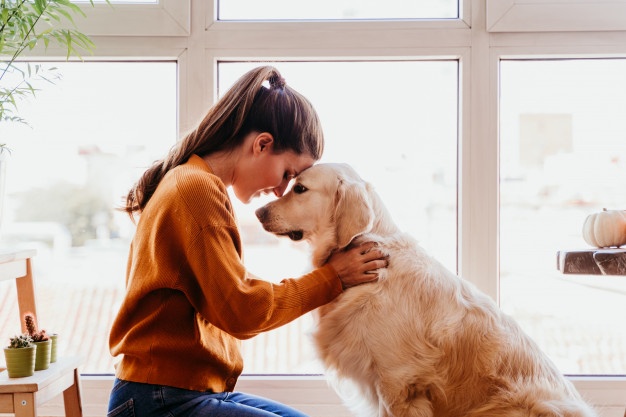

About the Golden Retriever

The Golden Retriever is a sturdy, muscular dog of medium size, famous for the dense, lustrous coat of gold that gives the breed its name. The broad head, with its friendly and intelligent eyes, short ears, and straight muzzle, is a breed hallmark. In motion, Goldens move with a smooth, powerful gait, and the feathery tail is carried, as breed fanciers say, with a “merry action.”
The most complete records of the development of the Golden Retriever are included in the record books that were kept from 1835 until about 1890 by the gamekeepers at the Guisachan (pronounced Gooeesicun) estate of Lord Tweedmouth at Inverness-Shire, Scotland. These records were released to public notice in Country Life in 1952, when Lord Tweedmouth’s great-nephew, the sixth Earl of Ilchester, historian and sportsman, published material that had been left by his ancestor. They provided factual confirmation to the stories that had been handed down through generations.
Goldens are outgoing, trustworthy, and eager-to-please family dogs, and relatively easy to train. They take a joyous and playful approach to life and maintain this puppyish behavior into adulthood. These energetic, powerful gundogs enjoy outdoor play. For a breed built to retrieve waterfowl for hours on end, swimming and fetching are natural pastimes.
Temperament:
Loyal, Mischievous, Outgoing
Height: 23-24 inches (male), 21.5-22.5 inches (female)
65-75 pounds (male), 55-65 pounds (female)
Life Expectancy:10-12 years
CARE

Nutration
A high-quality dog food appropriate for the dog’s age (puppy, adult, or senior) will have all the nutrients the breed needs. Some Goldens can become overweight, so watch your dog’s calorie consumption and weight level. If you choose to give your dog treats, do so in moderation. Treats can be an important aid in training, but giving too many can cause obesity. Give table scraps sparingly, if at all, especially avoiding cooked bones and foods with high fat content. Learn about which human foods are safe for dogs, and which are not. Check with your vet if you have any concerns about your dog’s weight or diet.
Grooming
Goldens heavily shed their thick, water-repellant double coat once or twice a year, and they also shed more moderately on a continuous basis. Most of the time, a good brushing-out with a slicker brush once or twice a week will remove much of the dead hair before it has a chance to fall onto the furniture. During times of heavy shedding, these brushing sessions turn into daily affairs. Baths help to loosen the dead hairs, but the dog must be completely dry before brushing begins. Otherwise, Goldens only need occasional baths to keep them clean. As with all breeds, the Golden’s nails should be trimmed regularly.
Exercise
Like most Sporting breeds, Goldens need plenty of daily exercise. A Golden who doesn’t get enough exercise is likely to engage in undesirable behavior. Goldens make great companions on long runs and bike rides, although consultation with a vet is recommended before starting strenuous or high-impact activities that might cause stress to the dog’s bones and joints. Many Goldens happily get their exercise on hunting trips or at field trials, as well as by participating in canine sports such as agility, obedience, and tracking.
Training
As with all breeds, early socialization and puppy training classes are recommended. Gently exposing the puppy to a wide variety of people, places, and situations between the ages of seven weeks and four months will help the Golden develop into a well-adjusted, well-mannered adult. Puppy training classes serve as part of the socialization process and help the owner learn to recognize and correct any bad habits that may be developing. Obedience training strengthens the bond between dog and owner—a Golden wants nothing more than to please his human. Golden Retrievers are outgoing, loyal, and eager to do your bidding, which makes them very easy to train.
Health
Goldens are generally healthy dogs, and responsible breeders will screen their breeding stock for health conditions including elbow and hip dysplasia; eye conditions such as juvenile cataracts, pigmentary uveitis, and progressive retinal atrophy; and certain heart diseases, including subvalvular aortic stenosis. The Golden’s ears should be checked weekly for signs of infection, and the teeth should be brushed often.
History
The most important name in the early history of the Golden Retriever is Dudley Marjoribanks, the first Lord Tweedmouth, who developed the breed in the Scottish Highlands during the reign of Victoria. For the 50 years between 1840 and 1890, Tweedmouth kept scrupulous records of breedings effected to create an ideal gundog for use at his Guisachan estate in the Highlands, Inverness-shire, Scotland. Tweedmouth wanted a dog suited to the rainy climate and rugged terrain of the area, so he crossed his “Yellow Retriever” with a breed that is now extinct, the Tweed Water Spaniel. Irish Setter and Bloodhound were also added to the mix.
“Through several generations of clever breeding,” an admiring historian wrote, “Tweedmouth created a consistent line of exceptional working retrievers.” With a little more refinement after Tweedmouth’s time, the Golden Retriever came forth as an enduring gift to dogkind from a hunt-happy aristocrat.
The Golden was first seen at a British dog show in 1908, and good specimens of the breed began arriving in America, by way of Canada, at about the same time. Sport hunters appreciated the breed’s utility, show fanciers were enthralled by their beauty and dash, and all were impressed by the Golden’s sweet, sensible temperament.
The Golden Retriever was admired from the beginning of its history in America, but the breed’s popularity really took off in the 1970s, the era of President Gerald Ford and his beautiful Golden named Liberty.
General Aperence
A symmetrical, powerful, active dog, sound and well put together, not clumsy nor long in the leg, displaying a kindly expression and possessing a personality that is eager, alert and self-confident. Primarily a hunting dog, he should be shown in hard working condition. Overall appearance, balance, gait and purpose to be given more emphasis than any of his component parts. Faults-Any departure from the described ideal shall be considered faulty to the degree to which it interferes with the breed’s purpose or is contrary to breed character.

HEAD
Broad in skull, slightly arched laterally and longitudinally without prominence of frontal bones (forehead) or occipital bones. Stop well defined but not abrupt. Foreface deep and wide, nearly as long as skull. Muzzle straight in profile, blending smooth and strongly into skull; when viewed in profile or from above, slightly deeper and wider at stop than at tip. No heaviness in flews. Removal of whiskers is permitted but not preferred. Eyes friendly and intelligent in expression, medium large with dark, close-fitting rims, set well apart and reasonably deep in sockets. Color preferably dark brown; medium brown acceptable.
BODY
Neck medium long, merging gradually into shoulders, sturdy and muscular. Back strong and level from withers to slightly sloping croup. Body is well-balanced, short coupled, with deep chest and well-developed forechest. Ribs long and wellsprung but not barrel shaped. Loin short, muscular, wide and deep.
FOREQUARTERS
Muscular, well co-ordinated and capable of free movement. Shoulder blades long and well laid back with upper tips fairly close together. Elbows close to the ribs without looseness. Legs straight, with good bone but not coarse.
Pasterns short and strong, sloping slightly. Dewclaws on forelegs are normally left on. Feet- medium size, round and compact with thick pads.
COAT
Dense and water-repellent with good undercoat. Outer coat firm and resilient, lying close to body,may be straight or wavy. Untrimmed natural ruff on neck, moderate feathering on back of forelegs and on underbody; heavier feathering on front of neck, back of thighs and underside of tail. Coat on head, paws, and front of legs is short and even. Color– rich, lustrous golden of various shades. Feathering may be lighter than rest of coat.
HINDQUARTERS
Broad and strongly muscled. Croup slopes only slightly. Stifles well angulated. Good length of thighs, short, strong rear pasterns.. Feet as in front. Tail– thick and muscular at the base, following the natural line of the croup. Tail
bones extend to the point of the hock. Carried level in action, or with slight upward curve; never curled over back.